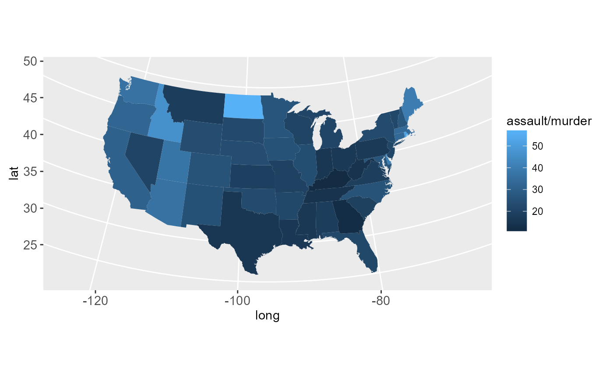

Create a data frame of map data.
Arguments
- map
name of map provided by the maps package. These include
county,france,italy,nz,state,usa,world,world2.- region
name of subregions to include. Defaults to
.which includes all subregion. See documentation formapfor more details.- exact
should the
regionbe treated as a regular expression (FALSE) or as a fixed string (TRUE).- ...
all other arguments passed on to
map
Examples
if (require("maps")) {
states <- map_data("state")
arrests <- USArrests
names(arrests) <- tolower(names(arrests))
arrests$region <- tolower(rownames(USArrests))
choro <- merge(states, arrests, sort = FALSE, by = "region")
choro <- choro[order(choro$order), ]
ggplot(choro, aes(long, lat)) +
geom_polygon(aes(group = group, fill = assault)) +
coord_map("albers", at0 = 45.5, lat1 = 29.5)
ggplot(choro, aes(long, lat)) +
geom_polygon(aes(group = group, fill = assault / murder)) +
coord_map("albers", at0 = 45.5, lat1 = 29.5)
}
